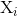
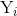
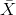
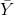

In Matlab there is more than one way of calculating the dot product. You can do it using a 'for loop', or through using vectorised notation.
The goal of this practical is for students to examine some of the practical considerations when implementing the dot product operation and when using the Pearson's test.
Before getting started please make sure you do the following:
- Open Matlab by typing 'Fiji' into the terminal of the linux workstation. You can find the Terminal by searching for it or by the short-cut: 'Ctrl + Alt + T'
- Goto the weblearn folder entitled: "Doctoral Training Centre (MPLS) Resources / Modules / 2014 / Michaelmas Term / Week 9 Foundations of Image Analysis / practicals / day2_registration" you will need the files in this folder.
We start with two lists of numbers (or two vectors or arrays as they are known). Please find the dot product of the two vectors. The dot product formula is a follows:
In Matlab there is more than one way of calculating the dot product. You can do it using a 'for loop', or through using vectorised notation.
close all;clear all;a = [2,9,32,12,14,6,9,23,4,5,13,6,7,92,21,45];b = [9,12,92,23,13,5,7,23,6,4,1,7,23,14,6,9];Please calculate the dot product of the vectors 'a' and 'b'. If you rearrange the numbers in 'b', what sequence will give the biggest magnitude when the dot product is again calculated with 'a'?
Rather than arbitary lists of numbers the rest of this practical focuses on real image data. Note the way we import the tiffs which have multiple channels:
X = double(imread('path2folder/neuron.tif',1));Y = double(imread('path2folder/neuron.tif',4));subplot(1,2,1);imshow(X,[]);subplot(1,2,2);imshow(Y,[]);Next using the command the below command you can extract the Pearson's (r) test value for the two images directly to measure the colocalisation. Remember that '0' represents no colocalisation whereas '1.0' represents perfect colocalisation.
[r,p] = corrcoef(X,Y);It should be the same as when measured in ImageJ.
Your goal is to implement this calculation based on the below formula and submit the code as part of the assignment.
Where 'n' is the number of pixels in each image,  and  refers to a specific pixel in either X or Y image array and  and  represent the average pixel value in these images. There is more than one way to do this You can either do it using 'for loops' or vectorised notation, use the approach you are most comfortable with. Make sure your algorithm gives the correct 'r' value (i.e. same as above).

The Pearson's test can act as a similarity/cost function for assessing the alignment/registration of two images. What is the Pearson's 'r' value for the following image? Use your Pearson's implementation from above, or the pre-existing matlab routine if its not working.
close all;clear all;X = double(imread('path2folder/composite.tif',1));Y = double(imread('path2folder/composite.tif',2));subplot(1,2,1);imshow(X,[]);subplot(1,2,2);imshow(Y,[]);Now as a crude registration algorithm we want to move one of our images relative to other and measure the similarity at each point (2 DOF, x and y). The position (transformation) which gives us the highest similarity represents the best registration of our two images. Please submit your registered image and the x and y displacement which represent the transformation.
(c) Dominic Waithe 2014. University of Oxford.